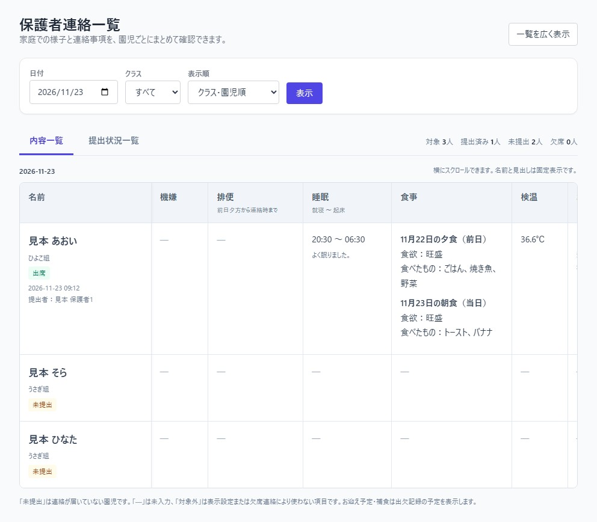
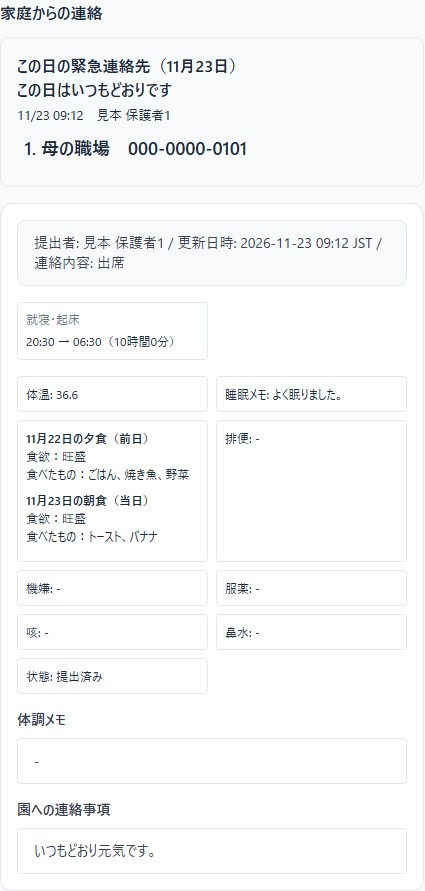
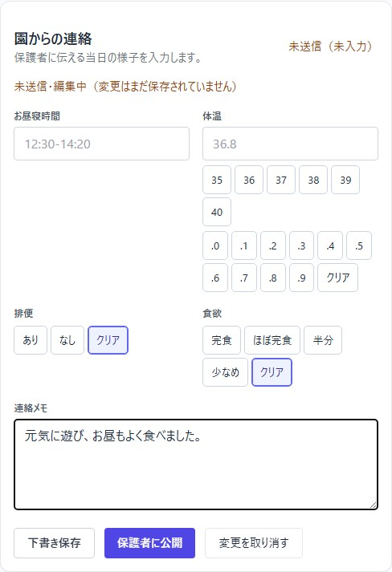
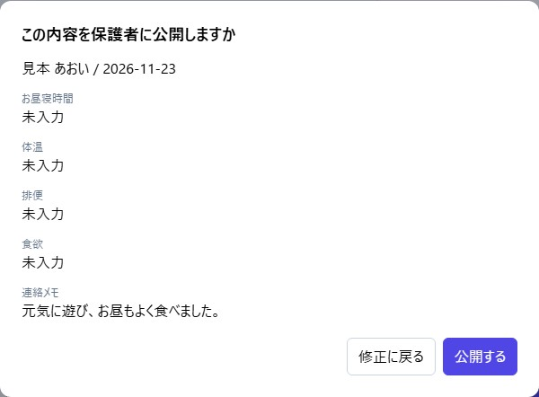
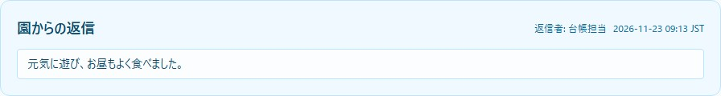

保護者の連絡を受け取り、返信する
職員メニューの「日次連絡」から、その日の家庭からの連絡を確認します。返信は編集できる職員が行います。
2026年11月23日更新。画面の人物・記録はすべて架空です。画像を押すと拡大できます。
1日付・園児を確かめる
「日次連絡」を開き、日付とクラスを確かめます。対象の園児の詳細を開いてください。

2家庭からの連絡を読む
「家庭からの連絡」で、提出者・更新日時・出席や欠席、体温などを読みます。夕食は前日、朝食は当日として、それぞれの食欲と食べたものを確認します。
この日の緊急連絡先が回答されている場合は、その園児・その日付の連絡順を使います。通常の連絡先や兄弟姉妹の連絡先と取り違えないよう、名前と日付を確かめます。園の連絡項目設定によって「対象外」と出る項目もあります。

3園からの連絡を書いて下書き保存する
「園からの連絡」に、表示されている食事・睡眠などの項目と「連絡メモ」を入力します。途中で保存する場合は「下書き保存」を押します。下書きは保護者には公開されません。
「未送信」や「未送信の変更あり」を確認します。公開済みの返信を書き直して下書き保存した場合、保護者には前に公開した内容が引き続き表示されます。

4確認画面を見て保護者に公開する
「保護者に公開」を押し、園児名・日付・返信内容を見直します。「修正に戻る」で入力に戻れます。「公開する」を押すと保護者が読めるようになります。
公開後に「公開済み」を確かめます。保護者は日次連絡や履歴から返信を読めます。内容を直した場合は、もう一度確認して公開します。

